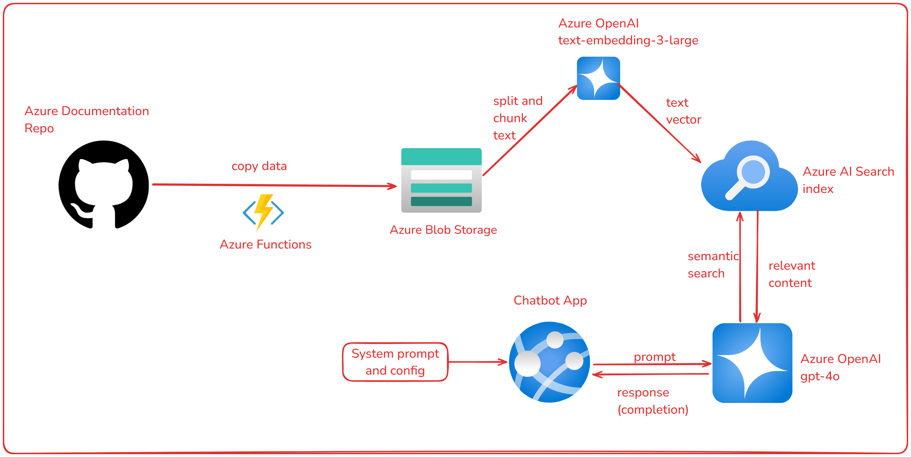

Data Lakehouse Avançado: Olist Lakehouse 2.0
Databricks
Delta Lake
PySpark
Esta é a segunda versão do projeto Olist, agora implementando práticas modernas de
engenharia de
dados no Databricks Lakehouse com foco em pipelines declarativas,
governança e
processamento incremental em escala.
A arquitetura segue o padrão Medallion (Bronze, Silver, Gold)
utilizando
Lakeflow Declarative Pipelines (ex-Delta Live Tables), com ingestão
contínua
via AutoLoader e tratamento de mudanças com AUTO CDC
para
dimensões SCD Type 1 e Type 2.
O projeto incorpora Data Quality com expectations em todas as camadas,
governança centralizada com Unity Catalog, rastreabilidade de dados
(lineage) e
separação de pipelines para dados transacionais append-only e entidades com mudanças
históricas.
Toda a infraestrutura e pipelines são implantados via Databricks Asset
Bundles,
com CI/CD automatizado, validação de código, testes e deploy entre ambientes de
desenvolvimento,
staging e produção.
Ferramentas utilizadas
- Databricks Lakehouse & Delta Lake
- Lakeflow Declarative Pipelines (DLT)
- AutoLoader (ingestão incremental)
- AUTO CDC (SCD Type 1 e Type 2)
- Unity Catalog (governança e lineage)
- Databricks Asset Bundles (IaC)
- GitHub Actions (CI/CD)
- SQL, PySpark

Pipeline de Dados da Câmara dos Deputados
Snowflake
dbt
Airflow
AWS S3
Python
Pipeline de dados completo voltado para engenharia de dados, com ingestão automatizada de informações públicas de todos os deputados federais.
Os dados incluem biografia, mandatos, despesas e atividade parlamentar, extraídos via API oficial.
A arquitetura implementa uma abordagem moderna de ELT com Snowflake e dbt.
A ingestão incremental diária é orquestrada com Airflow e armazenada no S3 em formato Parquet.
Transformações seguem padrões robustos de modelagem dimensional (SCD Type 2).
O projeto garante escalabilidade, automação e qualidade de dados ponta a ponta.
Ferramentas utilizadas
- Python, Pandas e requests
- Apache Airflow
- Amazon S3 e SQS
- Snowflake, Snowpipe
- dbt Core
- Streamlit e Jupyter notebook

Data Lakehouse: Olist
Databricks
Delta Lake
Spark
Azure
Este projeto utilizou a arquitetura de Data Lakehouse no Databricks para gerenciar dados em camadas (Raw, Bronze, Silver e Gold) e simular cenários de ingestão com CDC (Change Data Capture). Os dados, oriundos de um dataset do Kaggle, foram enriquecidos para criar um pipeline completo, desde ingestão até análise de negócios.
Implementei governança de dados com Unity Catalog, orquestração com Databricks Workflows, e integração contínua via GitHub Actions. O projeto consolidou habilidades em pipelines de dados, automação e análise com a arquitetura Medallion, otimizando o uso de dados para insights e aplicações analíticas.
Ferramentas utilizadas
- Pandas
- Git, GitHub, GitHub Actions
- Azure Blob Storage, Parquet
- Databricks, UnityCatalog
- Spark, Delta Lake
- Databricks Workflows

Chatbot com GPT-4 e Azure
GPT-4
RAG
Azure OpenAI
Azure AI Search
Neste projeto, explorei ferramentas de Inteligência Artificial do Azure para construir um chatbot especializado em Azure utilizando o GPT-4. Copiei os dados da documentação do Azure no GitHub para o Storage Account, utilizei o Azure AI Search para fazer embedding e indexação do conteúdo, e o Azure OpenAI para construção do chatbot em um App no Azure. O objetivo é fornecer respostas precisas e contextualizadas sobre serviços e funcionalidades do Azure.
Ferramentas utilizadas
- Python
- Azure Blob Storage
- Azure AI Search
- Azure OpenAI
- Git, GitHub
- Bicep template (IaC)